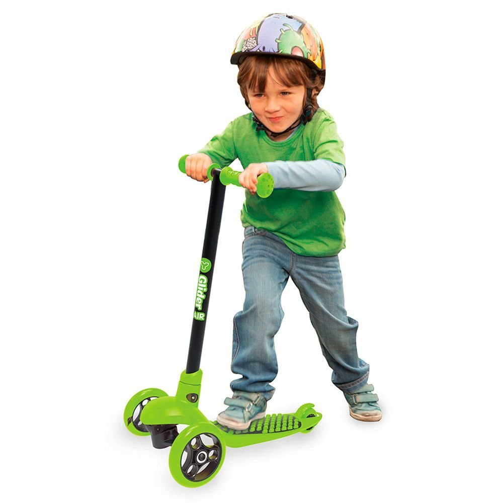

Типы самокатов
На сегодняшний день выделяются следующие виды самокатов:

Детские самокаты предназначены для использования детьми в играх и на прогулках. Они рассчитаны на ездока небольшого веса, имеют колёса малого диаметра, часто с литыми безвоздушными шинами, и примитивный тормоз, обычно в виде крыла заднего колеса, при нажиме ногой прижимающегося к шине колеса.
Самокаты для маленьких детей, ещё не умеющих держать равновесие при езде, имеют два расставленных колеса на передней оси и способны стоять вертикально в неподвижности.
Обычно детские самокаты окрашены в яркие цвета и покрыты картинками. Могут иметь звонок или клаксон и декоративную подсветку, в том числе внутри прозрачных шин колёс.
Городские самокаты, основное назначение которых — передвижение по городу. Диаметр колёса городских самокатов — от 15 до 27 сантиметров, что позволяет развивать довольно высокую скорость и преодолевать мелкие неровности дороги: трещины в асфальте, плитку и бордюры. Наличие амортизаторов, гибких дек или надувных колёс позволяет минимизировать вибрации при передвижении по разным типам дорожного покрытия. Небольшой вес и возможность складывания упрощает перемещение самоката в публичных пространствах и в общественном транспорте. Городские самокаты не предназначены для выполнения трюков.
Электросамокат является разновидностью городского самоката.
Трюковые самокаты - предназначены для выполнения акробатических трюков, поэтому высокие требования предъявляются к их прочности. Трюковые самокаты не могут складыватся (хотя есть модели, у которых есть возможность складываться). У трюковых самокатов колёса диаметром не более 130 миллиметров, дека и руль фиксированных размеров.
Дерт-самокаты - предназначены для катания по грунтовым и гравийным дорожкам, спускам и дёрт-паркам с трамплинами, а также для выполнения трюков. Имеют широкиме пневматические шины, прочную конструкцию без складного механизма.
Сноу-самокат - предназначен для катания по снегу, горнолыжным спускам и сноу-паркам, для чего имеет возможность установки коротких лыж вместо колёс. Самокат предназначен как для выполнения трюков, так и для спусков с заснеженных склонов.
Футбайк (велосамокат) — это самокат, в конструкции которого используются велосипедные компоненты. Он позволяет преодолевать большие расстояния, развивать и поддерживать высокую скорость, но усилий для активного катания требуется больше. Существуют футбайки для различных спортивных дисциплин — шоссе, скоростного спуска и ездового спорта, а также прогулочные модели.
Кикборд (англ. kickboard) - отличается от обычного самоката наличием двух расставленных колёс на передней или обеих осях и способом управления поворотом: поворот оси выполняется не рулём, а, подобно скейтборду, наклоном деки путём перемещения нагрузки от продольной оси деки к соответствующему краю либо с помощью поперечного наклона рулевой стойки. При этом руль кикборда может не иметь горизонтальной перекладины, и в этом случае он называется джойстиком.